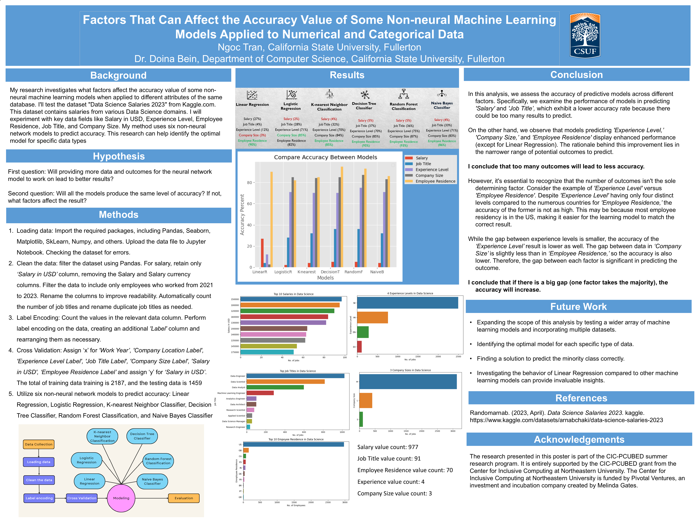

Research Poster
Factors That Can Affect the Accuracy of Some Non-neural Machine Learning Models Applied to Numerical and Categorical Data
My research investigates what factors affect the accuracy level of various machine learning models when applied to different attributes of the same database. I'll test the dataset "Data Science Salaries 2023" and experiment with key data fields.
My hypothesis is: will providing more data points and outcomes for various models to work on lead to better results, and will all the models produce the same level of accuracy?
My method uses six non-neural network models to predict accuracy: Linear Regression, Logistic Regression, K-nearest Neighbor Classifier, Decision Tree Classifier, Random Forest Classification, and Naive Bayes Classifier.
After seeing the result, my first conclusion is that too many outcomes to predict will lead to less accuracy. Second, the accuracy will increase if there is a big gap (one factor takes the majority). This research can help identify the optimal model for specific data types.